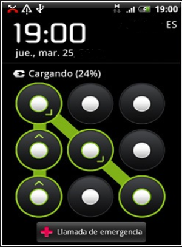

A continuación te indicamos las diferentes opciones disponibles para proteger tus dispositivos y así evitar accesos físicos no deseados:
- Contraseña
La contraseña es la llave que permite el acceso a nuestros dispositivos, a la información que contiene y a los servicios de Internet donde estamos registrados. La contraseña siempre tiene que ser secreta y lo más robusta posible para evitar que un atacante pueda descubrirla. Más adelante veremos cómo hacer una gestión segura de contraseñas.
- PIN
Para poder hacer llamadas telefónicas y acceder a internet sin la necesidad de una conexión wifi, sino con una línea de datos, los dispositivos móviles requieren de una tarjeta SIM (Subscriber Identity Module o módulo de identidad del suscriptor).
Para evitar que dicha tarjeta sea utilizada por otros para realizar llamadas telefónicas, enviar mensajes o navegar por Internet es necesario establecer un PIN a la tarjeta SIM, de al menos 4 dígitos.
En las siguientes imágenes se muestra cómo establecer o modificar un código PIN en la SIM dependiendo de si se tiene un sistema operativo Android o iOS.
Cómo establecer código PIN en Android
Cómo establecer código PIN en iOS
¿Y si no nos acordamos del PIN de la SIM?
Si se introduce el PIN de la SIM tres veces mal, la tarjeta se bloquea. Para desbloquearlo habría que introducir el código PUK (Personal Unlocking Key o código de desbloqueo personal), que es facilitado junto con el PIN de la SIM inicial de la tarjeta. También es posible conseguir el PUK desde las aplicaciones o cuentas personales de las operadoras telefónicas.
Dónde encontrar el código PUK
- Bloqueo de pantalla
Para evitar que alguien acceda a los contenidos de los dispositivos móviles o tabletas, debemos establecer algún tipo de bloqueo de pantalla. Esta funcionalidad bloquea el dispositivo de forma automática transcurrido un periodo de tiempo, aunque también es posible hacerlo de forma manual. Esta medida de seguridad restringe el acceso a la mayoría de las funcionalidades salvo a las más básicas como las llamadas de emergencia. Con los avances de las tecnologías disponemos de diversos sistemas de bloqueo de pantalla:
-
- Patrón de desbloqueo
Se basa en una matriz de puntos de 3x3, en la cual se configura un dibujo basado en el orden en que vamos pasando el dedo por los puntos de la matriz.

Patrón desbloqueo
-
- PIN
Combinación numérica de al menos 4 dígitos.
- Contraseña
Combinación alfanumérica de al menos 4 dígitos. El funcionamiento es idéntico al PIN, pero incluyendo más tipos de caracteres.
Este método es más fuerte que los anteriores, ya que mientras que para cada dígito hay 10 posibilidades diferentes, para cada carácter de la contraseña puede haber más de 100.
Cómo establecer pantalla de bloqueo en Android
Como establecer el bloqueo de pantalla en iOS
- Biométricos
En algunos dispositivos se incorpora sistemas biométricos para el desbloqueo de dispositivos, tales como lector de huellas o reconocimiento facial.
Este podría considerarse el sistema más seguro pues, si bien dejamos nuestras huellas dactilares en todas partes, es mucho más fácil espiar un patrón de desbloqueo, PIN o contraseña mientras se están introduciendo, que intentar recopilar huellas dactilares.
Sistema biométrico de desbloqueo en Android
Sistema biométrico de desbloqueo en iOS
Sistema biométrico facial en iOS
Para más información puedes consultar las páginas de soporte de Android y Apple.